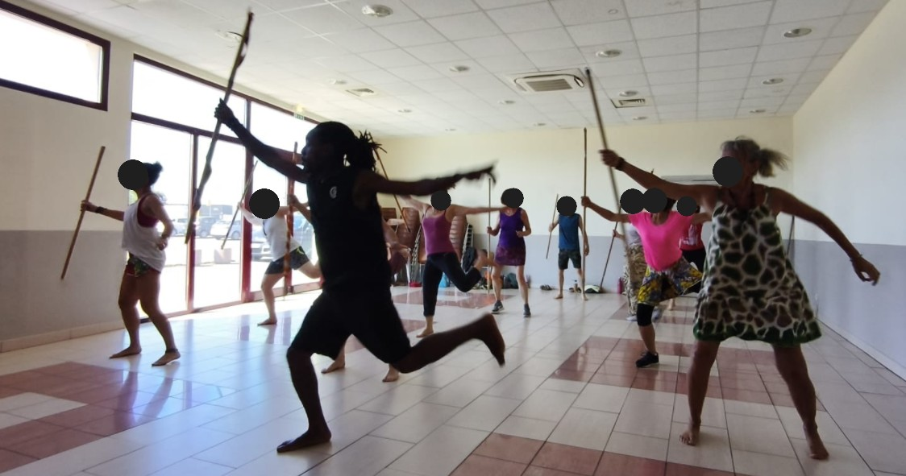

Nos stages
Krautergersheim — Juillet 2026
Un stage de danse organisé début juillet 2026 avec Cyrille et Ada, autour des rythmes et des danses d’Afrique de l’Ouest.


Un stage de danse organisé début juillet 2026 avec Cyrille et Ada, autour des rythmes et des danses d’Afrique de l’Ouest.
